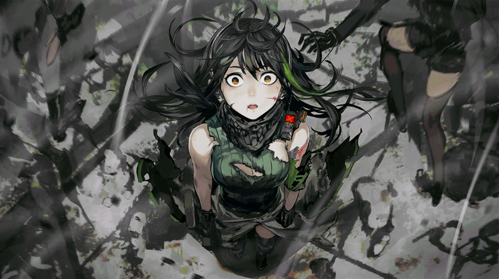

네게브 소대가 철혈의 관할 구역에서 AR-15를 수색하고 있던 도중, 통신 재밍이 전개됨과 동시에 알케미스트에게 포위된다. AR팀은 명령을 받아, 앞서간 소대에서 보낸 구출 인원을 맞이하러 간다. 외곽에서 네게브 소대를 성공적으로 구출한 직후, M4는 AR-15에게 납치를 당하게 된다. 이때, 그 정체를 알 수 없는 철혈의 보스가 셀 수 없을 정도로 많은 철혈 유닛들을 S08구역으로 진격하라고 명령을 내리고 있었고, 그 시각 M4는 AR-15로부터 심문을 받고 있었다. AR-15는 배후의 철혈보스와 M4의 답변과 그들의 철수를 교환하길 유도하였으나 실패한다. S08구역의 모든 그리폰 소대가 전멸의 위기에 빠진 그때, M4가 AR팀에게 구출됨에 따라 부대들이 S08구역에서부터 허겁지겁 탈출하던 도중, 한 빌딩에서 큰 폭발이 일어나는 걸 목격하게 된다.

추가 임무 :
그리폰이 후퇴하던 도중, SOP-II가 알케미스트에게 묶여있던 AR-15를 도와 같이 알케미스트를 처치하고 AR-15는 자신이 찾은 자료를 SOP-II에게 넘기고 난 후,
혼자서 빌딩 안으로 들어가 뒤에서 철혈에게 명령을 내리고 있던 철혈 보스가 모든 철혈의 지휘권자인 엘더 브레인이라는 사실을 알아낸다.
S08구역의 그리폰이 후퇴할 시간을 벌기 위해, AR-15는 빌딩을 폭파시켜 철혈 부대와 함께 모든 걸 끝낼 각오를 한다.
이후, AR-15의 잔해는 찾을 수 없게 된다.